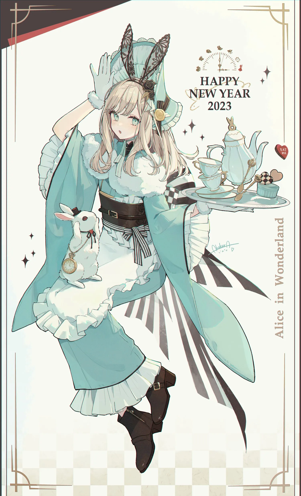

Twitter
pixiv
danbooru
個人サイト

lumine
原神の蛍のイラストが一番お気に入りです。pottsnessさんの絵は目元と髪の毛が印象的で大人っぽさと色っぽさが両立していてゲーム内の蛍とは違った雰囲気が感じられ もうひとつセクションをつくって画像毎のお気に入りポイントとか
content
イラストの雰囲気などお気に入りポイントを記載していく もうひとつセクションをつくって画像毎のお気に入りポイントとか